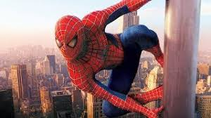
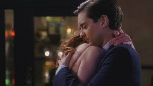

Driven by the Green Goblin’s kidnapping of those close to him, the two engaged in a savage, high-stakes battle across the rooftops and bridges of New York City.

Unlike other villains, the fight was fueled by Osborn’s knowledge of Peter’s secret identity, turning the physical brawl into a psychological war that pushed Peter to his emotional limits.
The fight reached its climax at an abandoned warehouse, where a battered Peter eventually gained the upper hand, nearly giving in to his rage before choosing to uphold his moral code.
Seeing Peter’s mercy as a weakness, Osborn remotely summoned his Goblin Glider to impale the hero from behind while he was distracted.

Warned by his Spider-Sense, Peter leaped out of the way at the last possible second, causing the glider to strike and seemingly kill Norman Osborn instead.
In the aftermath, Peter returned Norman's body to the Osborn estate and hid the Green Goblin gear to protect his friend Harry from the devastating truth about his father’s villainy.